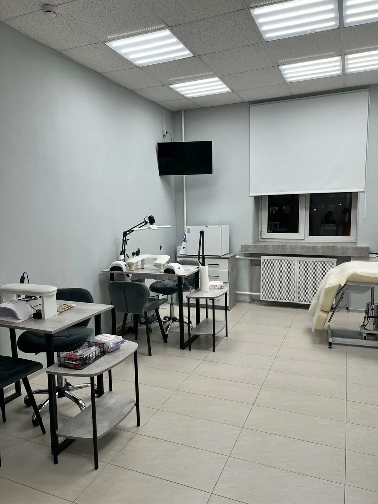
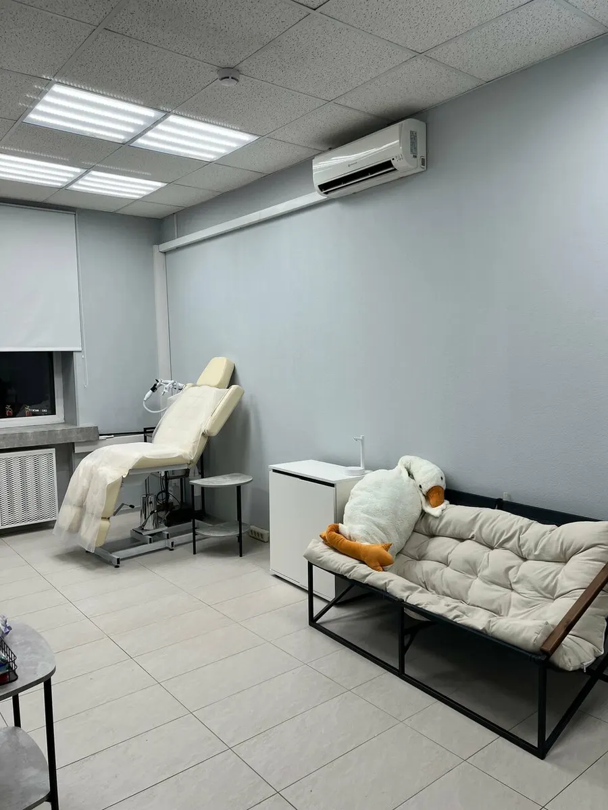
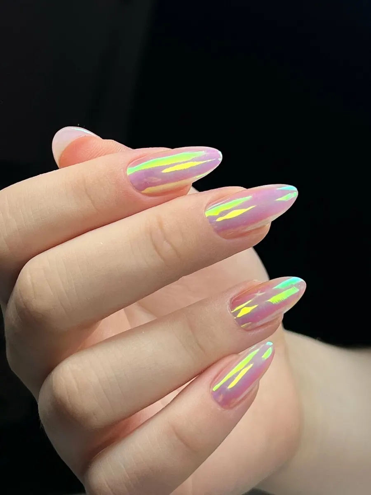
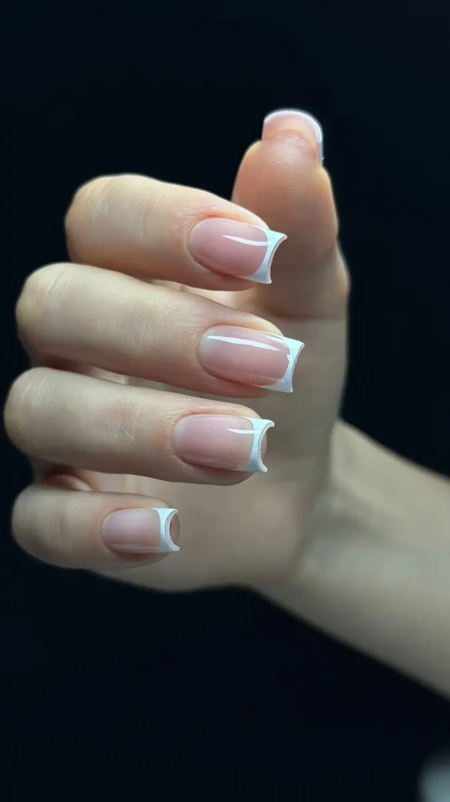

Студия на Огородном проезде · Москва
Маникюр «всё включено» на Огородном проезде – состав и цена
Маникюр с покрытием – 3000 ₽: снятие, укрепление гелем, выравнивание, плотное цветное покрытие. Выберите услугу, день и время, запись уйдёт в Telegram.
- 4,7 на Яндекс Картах, 15 отзывов
- Комплексы «всё включено» с составом
- Ежедневно с 10:00 до 22:00

Что входит в маникюр с покрытием
Входит
- Снятие старого покрытия
- Маникюр в комбинированной или аппаратной технике
- Укрепление цветным или камуфлирующим гелем и выравнивание
- Максимально возможное исправление архитектуры клюющего или скручивающегося ногтя
- Покрытие плотным цветом гель-лака
Отдельно, если нужно
- Наращивание – отдельной позицией, 4500 ₽
- Дизайн оплачивается отдельно
Что входит в комплекс – написано в прайсе
Прайс с карточки на Яндекс.Картах, обновлён 24 августа. Состав комплексов взят оттуда же.
Маникюр «всё включено»
- Маникюр без покрытияснятие, комбинированная или аппаратная техника, опил формы1 500 ₽
- Маникюр с покрытиемснятие, укрепление гелем, выравнивание, покрытие плотным цветом3 000 ₽
Наращивание
- Наращивание ногтейснятие, маникюр, наращивание гелем, однотонный гель-лак; дизайн отдельно4 500 ₽
Педикюр «всё включено»
- Аппаратный педикюр дисками без покрытияснятие, обработка пальчиков, стопы SMART-дисками, опил формы, уход3 000 ₽
- Аппаратный педикюр дисками с покрытиемто же + гель-лак3 500 ₽
Здесь все позиции с карточки Детали в Яндекс.Картах.
Как проходит запись
- 01
Выбираете услугу, день и время
В окне записи выше: услуга из прайса, день на неделю вперёд, свободное время.
- 02
Нажимаете «Записаться»
Текст с вашим выбором копируется, открывается Telegram мастера – остаётся вставить его в чат.
- 03
Приходите на Огородный проезд, 14
Район Бутырский. Кабинет и зона с диваном – на фото ниже.



Что пишут гости мастера
Носка до конца
«с первого маникюра у меня впервые все ногти проносились до самого конца» – Полина П., май 2024.
Стерильные инструменты
«Правильная стерилизация инструментов, я как медик вижу» – оксана и., февраль 2024.
Все виды маникюра и дизайны
«Выполняет все виды маникюра и дизайны, делает наращивание и укрепление гелем и рисует френч» – Mashanesterova1989, февраль 2024.
Чай и разговор
«всегда угостит вкусным чаем и поддержит беседу» – Алина С., июнь 2024.
Отзывы с Яндекс.Карт
«Делаю маникюр уже четвертый год и вечно были проблемы с ноской, сменила трех мастеров, но никто так и не решил проблему. Но по чистой случайности я попала к Наталье и с первого маникюра у меня впервые все ногти проносились до самого конца. Очень рада, что нашла это место, отличный маникюр, уютная атмосфера, рекомендую»
Полина П. · 27 мая 2024
«На маникюр к Наталье хожу уже давно, все как всегда на высшем уровне. Кутикула аккуратная, покрытие под кутикулу. Большой выбор цветов. Правильная стерилизация инструментов, я как медик вижу . Очень приятная атмосфера и энергетика мастера. Рекомендую 👍»
оксана и. · 5 февраля 2024
«Приятная девушка и очень качественная работа! Довольна что нашла этого мастера!»
Nadin K · 23 ноября 2025
Отзывы с карточки на Яндекс.Картах, без правок.
Частые вопросы
Сколько стоит маникюр?
Без покрытия – 1500 ₽, с покрытием – 3000 ₽.
Что входит в маникюр с покрытием?
Снятие, маникюр в комбинированной или аппаратной технике, укрепление гелем и выравнивание, покрытие плотным цветом гель-лака.
Сколько стоит наращивание?
4500 ₽: снятие, маникюр, наращивание гелем и однотонный гель-лак. Дизайн оплачивается отдельно.
Сколько стоит педикюр?
Аппаратный педикюр дисками без покрытия – 3000 ₽, с покрытием – 3500 ₽.
Где вы находитесь?
Москва, Огородный проезд, 14, Бутырский район.
Когда вы принимаете?
Ежедневно с 10:00 до 22:00.
Запись на ближайшие дни
- Адрес
- Огородный проезд, 14, Москва
- Часы
- Ежедневно 10:00–22:00
- Телефон
- +7 (901) 428-81-64